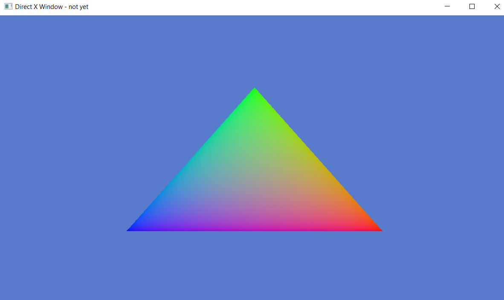

The humble Triangle. The backbone of 3d graphics. Everything we draw in games ends up as triangles on the GPU. Even the most complex AAA uses triangles. But why?
There are a number of reasons why triangles are ideal for 3d graphics:
1. Triangles always stay triangles after being projected from the 3d world to your computer screen. If we try drawing a square in 3d space and project that onto the screen, depending on the rotation, it could be a whole range of weird shapes. If we know we are only ever drawing and filling triangles, we can make a processor that is very fast at filling in 2d triangles (called the GPU).
2. Any set of three points are always coplanar. That is, it is guaranteed that we can form a plane out of any three points. If you think about four points, one of them could lie off the plane the other three points form. Being coplanar is a property that is needed to interpolate values across the surface of a triangle in 3d space, like texture coordinates, normal vectors, and colors.
So our next step on our directX journey is to render a triangle. This lays the ground for rendering more complex things like cubes and models.
In this lesson, we're going to be creating the vertex and pixel shader to render the triangle. We are then going to upload the vertex data of the triangle to the GPU. Then in the game loop, we will use our shaders and vertex buffer to draw the triangle into the back buffer each frame. Let's get started!
When we tell the GPU to draw our triangle it runs each vertex through a vertex shader to calculate the position on the screen in NDC coordinates. NDC coordinates are the screen coordinates ranging from -1 to 1 on the X and Y axis with (0, 0) in the middle of the viewport. Once the triangle is formed, the GPU will then run the pixel shader for each pixel inside the triangle, interpolating values across the face of the triangle (like color).
So the first thing we'll do is create a new file that will be our shader- let's call it shader.hlsl (hlsl is the extension for direct3d shaders).
This file will look like this:
Our vertex shader starts at vs_main with the input type of VS_Input. We define this in our shader and is the values each vertex contains. In this case, each vertex will have a float2 position (the x,y screen axis) and a float4 color. The : POS and : COL aside the values in VS_Input are a way to specify which data is which in the vertex buffer we upload. Since The vertex buffer could be a long list of values interleaved together like so: PosxPosYColorRColorGColorBColorA, we have to tell DirectX what incoming values link up to what variables in the shader.
As each vertex is processed by the vertex shader, it will transform it into Clip Space (one step before NDC space). In this case, we're just leaving the vertex xy values the same and adding a zero depth. The Vertex shader must return a float4 position as seen in the VS_Output Struct. This special value is marked with a : SV_POSITION next to it. This is the vertex in Clip space. The Graphics Card will then divide the x,y,z values by the w value implicitly turning it from Clip Space to NDC space.
The output of the Vertex shader then comes into the Pixel shader as the input. These values aren't the exact values we set in the Vertex shader, they instead are interpolated across the triangle's face. This lets us see things like what the position and color at each pixel are. The only thing the pixel shader has to return is the color of the pixel. In this case, we set it to the incoming color value. You can return up to 8, 32-bit, 4-component colors if writing to multiple buffers at once or no color if the pixel is discarded.
Now that we have made our vertex and pixel shader we can go back to our main.cpp to load our shaders.
We going to be using D3DCompileFromFile. This takes our shader file name, the shader entry point (this is vs_main for us), the shader version, and an ID3DBlob pointer that will point to the compiled code and the error messages from the compiler. If there aren't any errors this will be null.
We compile the shader and check if we got any errors. First, we check if there was an error of File Not Found. If not we check that there weren't any compiler errors. We output the errors to the user via a MessageBox. If the shader was compiled the compiled code will go into the psBlob. We then use this psBlob to create the shader using the d3d11Device.
We only need the compiled shader code to create the shader. On a release game, you could save the psBlob (as it is just a string) to a file and load it on startup to avoid having to compile. This is an advantage over OpenGL which doesn't give you this option. We compile both the vertex and pixel shader.
Ok, we've created our shader. Next is to create our vertex buffer that will store the points that define our triangle. For this example our vertex buffer will contain the vertex position and color. It is defined as a big array of floats with the values interleaved: posXposYcolorRcolorGcolorBcolorAposXposYcolorRcolorGcolorBcolorA.
Let's make our array now:
We're defining three vertexes, each vertex has 6 float values that define it (called the stride). When we draw this buffer, we have to tell our directContext this information, also how many vertexes are in the buffer. The offset is how many elements in we want to start drawing from. We will want all elements to be drawn so we will set the value at zero. So let's fill it out now:
Now we can upload this to the GPU. First we create a D3D11_BUFFER_DESC, describing the buffer we want. We want be touching this data again while the program is running so we set the Usage flag D3D11_USAGE_IMMUTABLE. This is a vertex buffer, not a index buffer or constant buffer, so we set the BindFlags to D3D11_BIND_VERTEX_BUFFER.
To create a buffer we have to wrap our vertex data in a D3D11_SUBRESOURCE_DATA struct. We can then use the d3d11Device to create a buffer.
Great! We've uploaded our vertex data, we've created our shader that will draw the vertexes, now we just need to create the ID3D11InputLayout for the buffer before we can start drawing it. This is where we link the values from the vertex buffer to the VS_Input struct we defined in our shader. Our vertex buffer doesn't know that the first 2 floats of each vertex is the position data. It just sees an array of floats. It looks like this:
We create an D3D11_INPUT_ELEMENT_DESC array that will tell the GPU how to interpret the data in the vertex buffer. For each type in our VS_Input struct, we marked them with a name (eg. : POS ) to say which values they are in the buffer. In this case the first element is "POS" (the same name as the one we wrote in shader) which is 2 floats in the buffer so we set the type to DXGI_FORMAT_R32G32_FLOAT. This value is at the start of each vertex so we have no offset. The "COL" one however would have a 8byte offset from the start of each vertex. We can use D3D11_APPEND_ALIGNED_ELEMENT for convenience to define the current element directly after the previous one. We also say that this value is per vertex not per instance (Per instance is useful for creating a buffer that has instancing data in it).
We then create the InputLayout using our d3dDevice. You'll notice we pass in the vertex shader blob which we got when we created our vertex shader. This is because it needs to make sure you've actually defined the values you intend to link up.
Now that we've got the three things to draw a triangle - the shader, the vertex buffer and the Input Layout, we can now draw it.
In our game loop we have to do a few things to get ready to render:
First we set our viewport. This is the size of the screen we are rendering to. If we were making a multiplayer game with four players playing on the same screen, we would set the viewport to just a quarter of the window size.
We set it to the same size as our buffer in the SwapChain. The other values of the viewport are the min and max depth for the final depth value. We set these to the default min and max range (0 and 1).
We then set our render target - the buffer we want to draw into. This is the equivalent of glBindBuffer in openGL. We want to render to the default backbuffer in our swapChain so we set that.
We can bind more than one buffer using this function, for example if doing a bloom effect.
The next step is to now use our vertex buffer and input layout.
We first set the type of primitive topology we're rendering. We're drawing triangles so we set it to a triangle list. There are other options such as a TriangleStrip we can be more performant, but we're going with a triangle list.
We set the inputLayout to the one we created, we also set the Vertex shader and the Pixel shader to the ones we created. You can only ever have one of each set at a time, so these will override the last value set in the Device Context.
We then set our Vertex Buffer to the buffer containing our triangle, passing in the stride and offset that we set earlier. You can set more than one buffer at a time. This can be useful if you have one with a model and one with instancing data.
With all this set we can now draw our buffer, passing in the number of vertexes we want to draw. We want to draw the whole buffer.
That's it! That's all the code we need to write to render the triangle. We'll now compile it. We have to add an extra header for the shader compiler and linker flag.
And our build script will look like this:
If we run this now and run our program we should see our colorful triangle. The colors at each vertex - green, blue and red getting interpolated across the face.

Pat yourself on your back. It's no small feat rendering a triangle and is the cornerstone to rendering more complicated scenes. Well Done!
1. What two shaders are run on the GPU to render a triangle?
[A vertex shader and a pixel shader]
2. What does the vertex shader do?
[Turns the incoming position into a 4d vector in clip space]
3. What is the pixel shader in charge of doing?
[Calculating the color of the pixel.]
4. What do you need to specify after the variables in the VS_Input struct?
[Names that you can reference when creating the Input Layout for the buffer that will use the shader]
5. Why is the markup name SV_POSITION in the VS_OUTPUT important?
[The VS_Output struct must have this to know which variable in the output represents the vertex position.]
6. What four things do we create before we enter our game loop to render the triangle?
[Vertex Shader, Pixel Shader, VertexBuffer and InputLayout]
7. Can you draw multiple buffers at once?
[Yes, IASetVertexBuffers takes in an array of buffers that will be drawn at once]
8. Can you only have one vertex and one pixel shader set at once?
[Yes]
9. How do we draw our vertex buffer?
[d3dDeviceContext->Draw()]